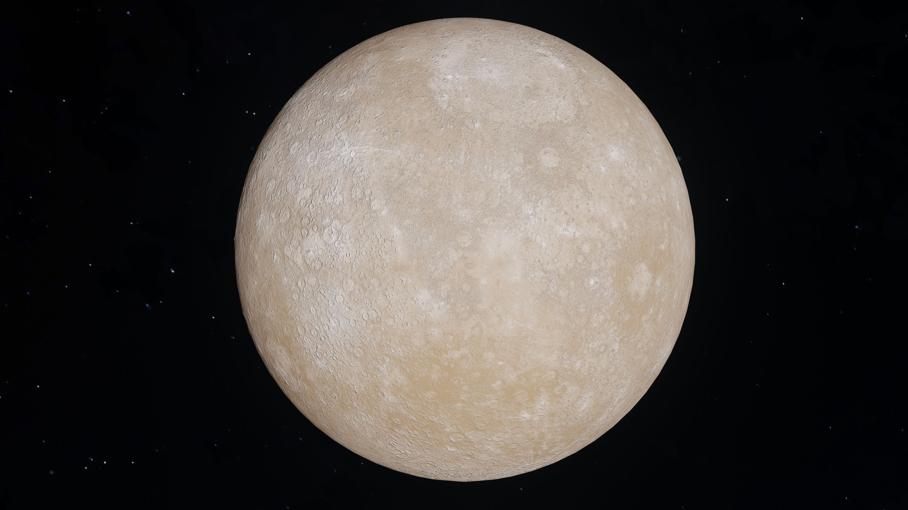
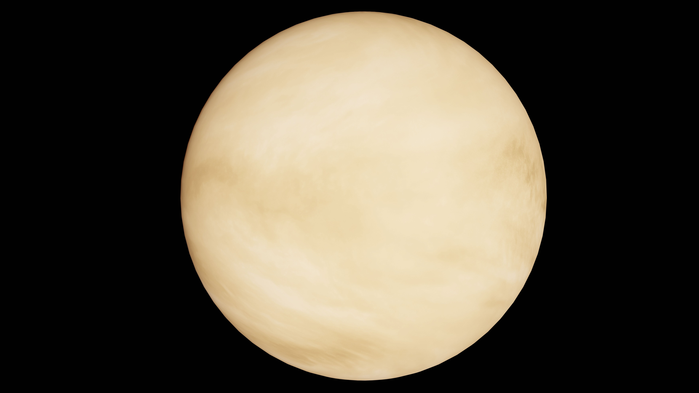
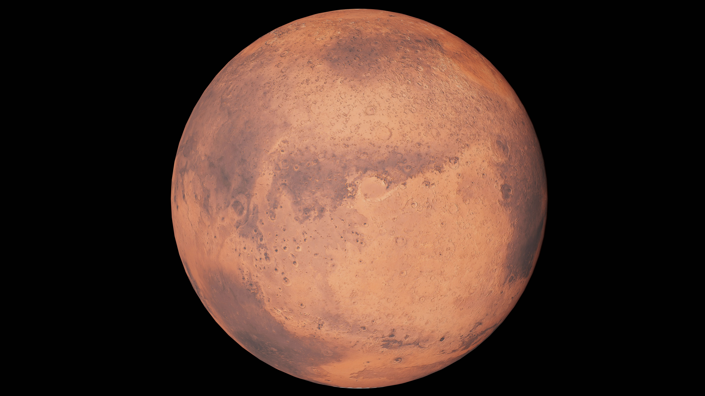

1. Меркурій

Меркурій — найменша планета Сонячної системи та найближча до Сонця. Його поверхня вкрита численними кратерами і дуже нагадує наш Місяць.
Цікаві факти про Меркурій:
- Рік на Меркурії триває всього 88 земних діб.
- Через майже повну відсутність атмосфери температура вдень сягає +430 °C, а вночі падає до -180 °C.
- У Меркурія немає жодного природного супутника.
2. Венера

Венера — друга планета від Сонця, яку часто називають «сестрою Землі» через схожі розміри та масу. Проте умови на її поверхні абсолютно непридатні для життя.
Цікаві факти про Венеру:
- Це найгарячіша планета Сонячної системи (близько +465 °C) через потужний парниковий ефект.
- Венера обертається навколо своєї осі у зворотному напрямку порівняно з більшістю інших планет.
- Доба на Венері триває довше, ніж її рік (243 земні доби проти 225).
3. Земля

Земля — третя від Сонця планета та найбільша серед планет земної групи. Це єдине відоме місце у Всесвіті, де існує життя.
Цікаві факти про Землю:
- Понад 70% поверхні нашої планети вкрито водою у рідкому стані.
- Земля має потужне магнітне поле, яке захищає все живе від небезпечного сонячного випромінювання.
- Має один великий природний супутник — Місяць, який впливає на океанічні припливи та відпливи.
4. Марс

Марс — четверта планета від Сонця, відома як «Червона планета». Свого кольору він набув через велику кількість оксиду заліза (звичайної іржі) у ґрунті.
Цікаві факти про Марс:
- На Марсі розташована найвища гора в Сонячній системі — згаслий вулкан Олімп заввишки понад 21 км.
- Планета має два невеликі супутники неправильної форми — Фобос і Деймос.
- На полярних шапках Марса є значні запаси водяного льоду.